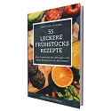
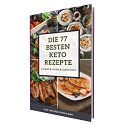
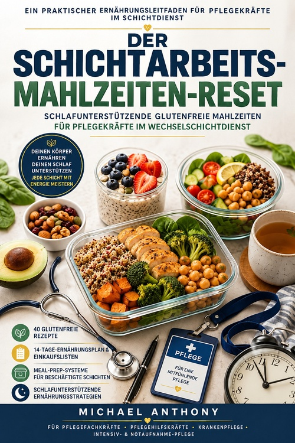
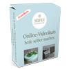

Küche & Haushalt28,39 €
55 leckere Frühstücks-Rezepte Gratis Buch von MDS
Digitales Rezeptbuch mit 55 Frühstücks-Rezepten und weiterführenden Angeboten rund um Rezepte und Ernährung.
Empfehlung ansehenPraktische Ideen und Helfer für Küche und Alltag.

Digitales Rezeptbuch mit 55 Frühstücks-Rezepten und weiterführenden Angeboten rund um Rezepte und Ernährung.
Empfehlung ansehen
Digitaler Guide zum Selbermachen von Waschmittel mit praktischen Informationen für einen nachhaltigen Haushalt.
Empfehlung ansehen
Onlinekurs rund um basisches Kochen und Ernährung mit Rezepten und Anleitungen für den persönlichen Neustart.
Empfehlung ansehen
Digitales Rezeptbuch mit 66 Low-Carb-Rezepten und weiterführenden Angeboten rund um Rezepte und Ernährung.
Empfehlung ansehen
Digitales Rezeptbuch mit 77 Keto-Rezepten und weiterführenden Angeboten rund um ketogene Ernährung.
Empfehlung ansehen
Praktischer Ratgeber mit 15 Rezepten, Wochenplan, Budgettipps und Ideen für eine alltagstaugliche und nachhaltige Küche.
Empfehlung ansehen
Digitales Meal-Prep-E-Book mit 40 glutenfreien Rezepten, einem 14-Tage-Ernährungsplan, Einkaufslisten und Anleitungen für den Schichtalltag.
Empfehlung ansehen
Mitgliederbereich mit über 1.500 Rohkost-Rezepten, Tutorials, Schritt-für-Schritt-Anleitungen und einem Einsteigerkurs.
Empfehlung ansehen
Interaktives E-Book mit veganen Rezepten und Anregungen für individuelle Ziele rund um Ernährung und Kochen.
Empfehlung ansehen
Online-Videokurs zur Herstellung eigener Naturseifen mit Ölen, Fetten, Kräutern und ätherischen Ölen – Schritt für Schritt erklärt.
Empfehlung ansehenAnzeige · Affiliate-Link: Wenn du über einen Link kaufst, erhalten wir möglicherweise eine Provision. Der Preis bleibt unverändert.